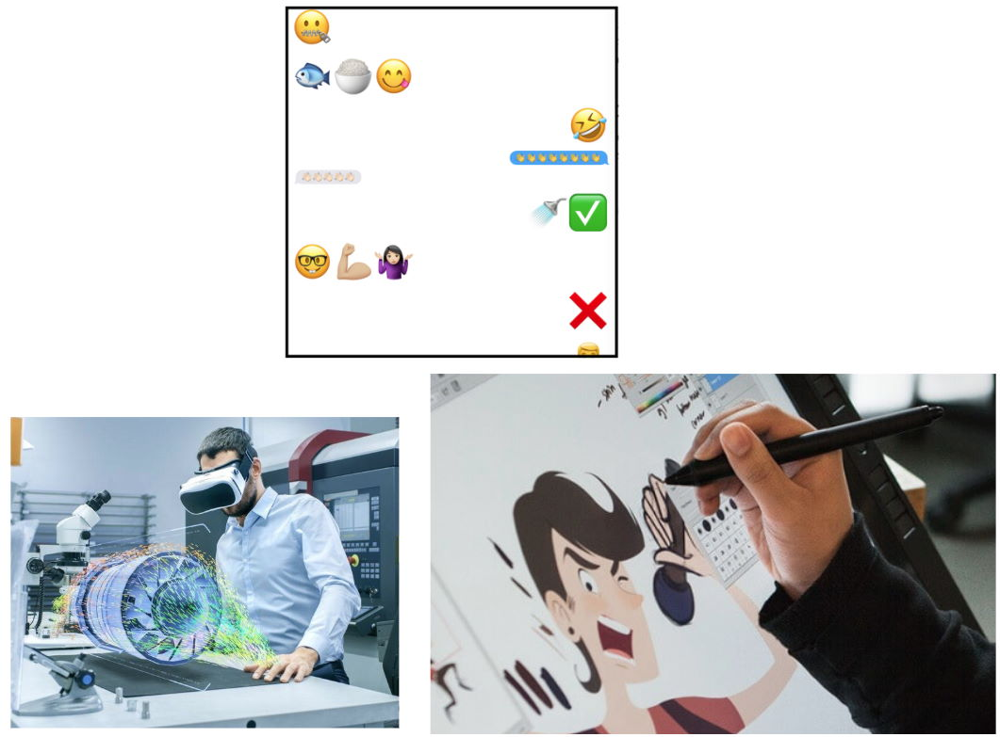

Crowdsourcing Haptic Effects
Obtaining Large Scale User Feedback
University
The University of British Columbia (UBC)Research Group
Sensory Perception and Interaction (SPIN)Time Period
2015Materials
Keywords
In design, collecting feedback is critical. While it can be straightforward to collect feedback on visualizations and sounds, how can designers collect feedback for haptic effects that can only be physically felt in person?
The Sensory Perception and Interaction (SPIN) lab was determined to help haptic designers collect and utilize data of designed vibrotactile effects in order to see what end-users thought about them. As such, my role involved the creation of phone browser compatible vibration effects (proxies) that aimed to retain the original information and affective qualities of higher fidelity effects such that they could be deployed on crowdsourced services such as Amazon’s Mechanical Turk.
To do this, I created JavaScript files that would activate a mobile phone’s vibration motor to be on/off for certain durations of time. Through much iteration and team feedback, I created scripts that would characterize the different characteristics of vibrations such as intensity, roughness, ramps and oscillations.
Phone vibration proxy example.
It was found that these new versions of the effects successfully retained their original affective intentions. The findings of this work were published at a top-tier HCI conference called the Conference on Human Factors in Computing Systems (CHI). The associated publication can be found in the left panel links.

Haptic Design Practices and Tools
Conceptual and Technical Design Support for Haptic Designers
University
The University of British Columbia (UBC)Research Group
Sensory Perception and Interaction (SPIN)Time Period
2016 to 2020Keywords
Haptic technology could act as the key in actualizing the physicality expected in many experiences such as in virtual reality, gaming, education and affective communication.
However, with so many types of haptic technologies out there, such as smartphones/watches, game controllers, and more, what is the best means for designing with haptic technology to support a physical experience?
Credit: Forbes (Left), Hacker Noon (Middle), Top Chartex (Right).
Being able to feel physical objects, metaphors of emotions, and constraints could be helpful for VR, affective communication, and physical gesture training.
Credit: IT Pro Today (Top Left), Stephen Brewster (Top Right), My Nintendo News (Bottom Left), Tech Spot (Bottom Right).
The many types of haptic technologies out there.
This challenge is what I sought to address in my time as a student at the Sensory Perception and Interaction (SPIN) group at the University of British Columbia by researching the conceptual and technical design processes of haptic interactions.
In one project, I worked with a PhD student on a haptic effect prototyping tool called Macaron, that allowed haptic designers to create, refine, and mix elements of different vibrotactile effects to quickly create new effects for smartphones and smartwatches. My role was to develop quality of life features such as saving/loading effects using the React framework. The tool is linked to the left panel.
In another project, I worked with another PhD student to research and conceptually design an interface for tuning the affective and pragmatic qualities of vibrations such that they would meet the demands of various situations that smartphone/watch users would appreciate (eg. useful notifications, affective communication, etc.). The associated publication is linked to the left panel.
How haptic designers and end users could conceptually benefit from tuning haptic effects parametrically.
I also worked with secondary school students to identify possible ways for haptic technology to support educational experiences. We analyzed existing STEM and classroom approaches, in order to ideate possible haptic designs that would teach STEM concepts in a physical manner. The students practiced core HCI research methodologies such as user interviews, cognitive walkthroughs, focus group interviews, qualitative analysis and much more.
Credit: UBC SPIN Lab (Magic Pen, Bottom), Haply Robotics (Haply, Top). An example conceptual sketch of how 2 haptic devices could be used for educational purposes. Design created by secondary school students.
My Master’s thesis systematically assessed the literature of different academic communities and compared their design practices in creating haptic applications. Specifically, the interactive design and engineering/psychological communities were characterized on the technical and conceptual aspects of designing haptic applications. The results suggested different ways in which each community's strengths/gaps in haptic design could be bolstered by the practices of another community.
Marking Life’s Moments
Unobtrusively Documenting Life
University
The University of British Columbia (UBC)Course
CPSC 444: Advanced Methods for Human Computer-InteractionTerm
UBC 2014 Winter Term 2Materials
Keywords
Life is full of wonderful fleeting moments, but how can we document it without obtrusively pulling out a phone, or awkwardly pulling out a notebook to write down how we feel about a moment?
Credit: Canon. Life is full of fleeting moments, how can one find the time to document how they feel?
This concept served as the inspiration for the "Lifemarks" project in an undergraduate course in advanced Human Computer Interaction techniques (CPSC 444). In a team, we followed a design thinking-like process for systematically understanding possible user needs and approaches to life documentation, and used this knowledge to create new unobtrusive ways to document life’s passing moments.
Our solution consisted of a simple wearable device, powered by Arduino, that could be “clicked” to mark an important moment in a day. Users could then later revisit the mark via a web interface that would have sufficient metadata that could trigger the necessary memory to fill in the remaining moment details.
The Arduino hardware used to prototype Lifemarks.
The Lifemarks interface for editing details.
The main button to discretely create a Lifemark.

Creating a Lifemark with the click of a button.
Collaboration in Cloud Services
Understanding How People Collaborate in Shared File Systems
University
The University of British Columbia (UBC)Course
CPSC 554m: Topics in Human Computer Interaction, Universal Usability, CSCW, and PersonalizationTerm
UBC 2017 Winter Term 2Materials
Keywords
With life and work being shared online, issues in organization are bound to occur. For example, when relationships end, should shared files live or die? Or in group projects, how would one negotiate file deletion in the case of saving personal data space?
These were the types of questions that drove our team to understand how collaboration currently occurs in various online file sharing systems (Google Drive, Dropbox) in order to obtain a sense of how these systems can be redesigned to suit the nuances of file sharing under different social circumstances.
For a graduate HCI project course (CPSC 554m), our team conducted an extensive field study complete with interviews and qualitative analysis to understand different users and how they respectively approached shared file collaboration.
In terms of insights, it was found that turn-taking was an essential activity that was currently reliant on a seperate communication service (eg. email, Facebook Messenger, Slack). Additionally, a notion of role-taking (whether implicit or explicit) was often conducted by team members in activities such as organizing files/tasks. The notion of ownership of online shared files was overall found to be fluid and dynamic (eg. earned through contributions of content, whoever created the original files, etc.). Conflicts in version tracking, and file naming/organizing conventions were also found to be common problems.
We used these findings to create various conceptual prototypes that addressed our insights of file sharing behaviour.
User Activity Overview - This conceptual view of a Google Drive file system allows users to identify who is actively working on certain aspects of a project’s files without having to use external communication.
Place/Time Tab Overview - This conceptual view of a Google Drive file system allows users to understand the files associated with different places/times and actions.
Contact Information
Email:
mchun345[at]gmail[dot]com